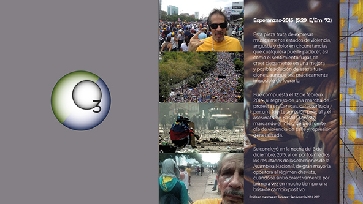

MEDIA: MÚSICA
|
VIDEOS | GALERIA |
CONCIERTOS
|
INFO: FUNCIÓN | INTEGRANTES | TARIFAS | DISTRIBUCIÓN | RIDER |
INICIO
INFO: FUNCIÓN | INTEGRANTES | TARIFAS | DISTRIBUCIÓN | RIDER |
{kind=link}
INICIO

ESPERANZAS-2015
(Emilio Mendoza)
E / Em 72 div. binaria
Esta pieza trata de
expresar musicalmente estados de violencia, angustia y dolor
en circunstancias que cualquiera puede padecer, así como el
sentimiento fugaz de creer ciegamente en una solución de esas
situaciones, aunque sea prácticamente imposible de lograrlo.
Fue compuesta el 12 de febrero, 2014, al regreso de una marcha
de protesta en Caracas, caracterizada por una fuerte agresión
policial y el asesinato de Bassil D’Acosta, marcando el inicio
de una fuerte ola de violencia de calle y represión
generalizada. Se concluyó en la noche del 6 de diciembre,
2015, al oír por los medios los resultados de las elecciones
de la Asamblea Nacional, de gran mayoría opositora al régimen
chavista, cuando se sintió colectivamente por primera vez en
mucho tiempo, una brisa de cambio positivo.
Esquema formal PDF
Esquema formal PDF
Música
• CD Guarapiche Blues (2020), Cuarteto (guit 6, guit. 12, bajo, maracas)
• En distrokid.com (Audio)
• En YouTube (Audio)
• CD Laberinto Dúo (2017), Dúo (guit 6, guit 12)
• En distrokid.com (Audio)
• En YouTube (Audio)
Comentario
Después de un acorde bastante disonante
rasgueado al principio jalado por un cuenco tibetiano, se
construye un diálogo representativo de los dos polos
emocionales opuestos: desespero y dolor (Tema A) vs alegría
imaginada que ciega el presente sufrimiento, la esperanza
(Bajaditas & Tema B), a través de una macro-forma ABA
(mayor-menor-mayor). Acordes desagradables (Tema A,
menor con mayor séptima en sucesión de terceras), recalcando
el dolor con trecillos de negras en la introducción, se
llega como en un abrir de puertas a una gran sala o gran
jardín, a una melodía en sextas bajando en escalones
(Bajaditas). Se le incluye la clave de son (3+2) para darle
un saborcito adicional de "rumba y disfrute", parte de
nuestra idiosincracia con lo cual convertimos cualquier
situación de alegría en una fiesta, ¡muy del trópico y muy
de Venezuela!. Estas cuatro frases entre escalones largos y
síncopas cortas, sea en terceras o sextas, crean una
simetría formal de cuatro frases en espejo –orden, balance,
belleza, pensamiento positivo... En contraste, el Tema C,
C2, C3 en menor contiene una forma complicada de dos
entidades, una corta (en verde) y otra larga (en azul),
donde una va creciendo mientras la otra se acorta y al final
aparecen totalmente de diferentes tamaños. De las tres
frases la última es la más corta y es como si hubiera nacido
al fin el cuerpo entero a pesar de todo el dolor
circundante, torturas, represión, hambre, todo lo que hemos
sufrido por tanto tiempo en este país. Vuelve a caer a la
pelea de calle con el Tema A3, con un llamado a la
imaginación de nuevo para reunir fuerzas. Esta vez sale una
novedad, una voz libre y elegante, una mirada de convicción
en las manos del solo de guitarra, que al subir
emocionalmente llega a un plateau y le entrega la magia a la
guitarra 12 que se aguanta arriba esperando que suba el bajo
y le entrega a su vez el clímax. Se logra de este modo un
triple clímax, para concluir las dos guitarras haciendo
simultáneamente cada una su versión de lo que ve en el
futuro en el Tema A4, lo positivo en la guitarra 6, el dolor
en la guitarra doce.
Videos
|
Video
de Tomek Baczkowski, sobre
el Twinfin Surfcamp,
Adeje, Tenerife,
con la pieza grabada en vivo por la mitad, en el concierto de despedida, lunes, 24-10-2016. |
|
Ensayo de Juan y
Emilio en La Perla,
la primera vez que se toca la canción de arriba a abajo. |